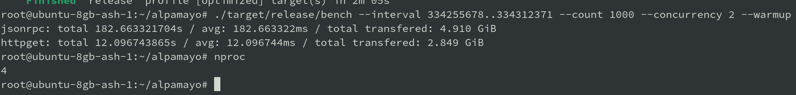

- Subscribe to the Geyser gRPC stream and use RPC in certain cases for missed slots
- Blocks stored in protobuf in files
- ~30% faster getBlock response time compare to Agave
- ~5ms read time per block
- getTransaction with (offset,size)
Block based methods
- getBlock
- getBlockHeight
- getBlocks
- getBlocksWithLimit
- getBlockTime
- getFirstAvailableBlock
- getLatestBlockhash
- getRecentPrioritizationFees (includes `percentile` param agave#217)
- getSignaturesForAddress
- getSignatureStatuses
- getSlot
- getTransaction
- isBlockhashValid
Smart cache
- getClusterNodes
- getInflationReward
- getLeaderSchedule
Blocks and transactions improvements:
- HTTP/GET
- Protobuf encoding
Performance changes:
- 5ms read data
10ms parse protobuf120ms encode with options (highly depends from the block)10ms serialization- parse protobuf on client side: +10ms
Simple benchmark on low-level hardware
